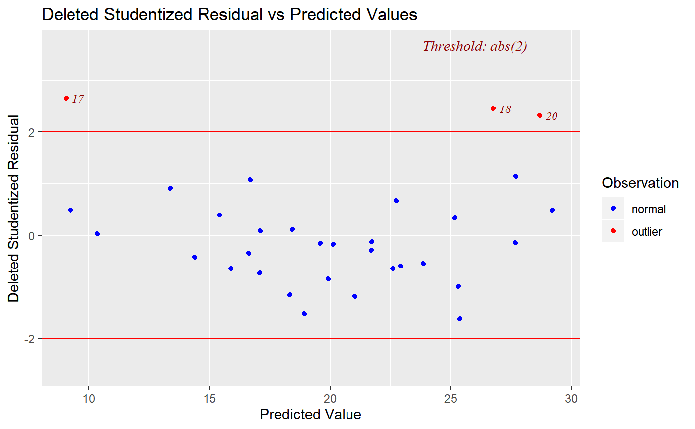
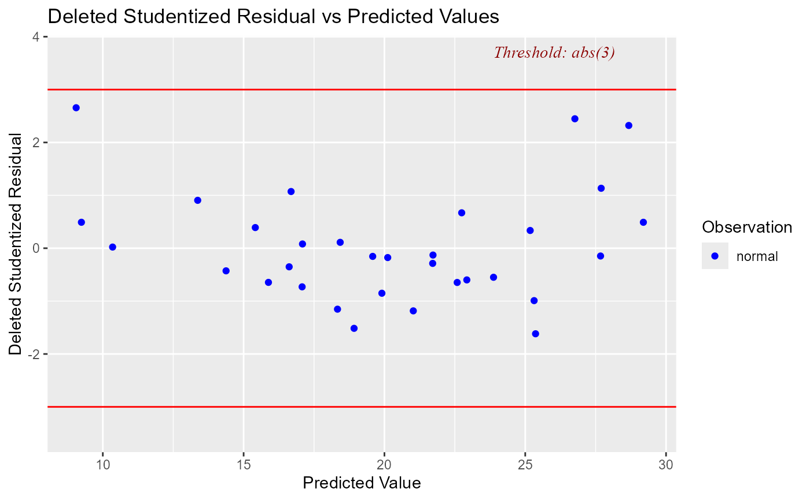

Deleted studentized residual vs fitted values plot
Source:R/ols-dsresid-vs-pred-plot.R
ols_plot_resid_stud_fit.RdPlot for detecting violation of assumptions about residuals such as non-linearity, constant variances and outliers. It can also be used to examine model fit.
Arguments
- model
An object of class
lm.- threshold
Threshold for detecting outliers. Default is 2.
- print_plot
logical; if
TRUE, prints the plot else returns a plot object.
Value
ols_plot_resid_stud_fit returns a list containing the
following components:
- outliers
a
data.framewith observation number, fitted values and deleted studentized residuals that exceed thethresholdfor classifying observations as outliers/influential observations- threshold
thresholdfor classifying an observation as an outlier/influential observation
Details
Studentized deleted residuals (or externally studentized residuals) is the deleted residual divided by its estimated standard deviation. Studentized residuals are going to be more effective for detecting outlying Y observations than standardized residuals. If an observation has an externally studentized residual that is larger than 2 (in absolute value) we can call it an outlier.
Examples
model <- lm(mpg ~ disp + hp + wt + qsec, data = mtcars)
ols_plot_resid_stud_fit(model)

ols_plot_resid_stud_fit(model, threshold = 3)
